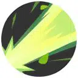
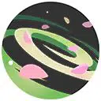
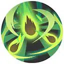

| Attaque | Icône | Description |
|---|---|---|
| Attaque de base |  |
La troisième attaque inflige des dégâts supplémentaire et centre les ennemis au milieu des lianes. |
| Talent | Icône | Description |
|---|---|---|
| Engrais | Augmente tous les dégâts infligés lorsque le Pokémon a peu de PV. |
| Attaque spéciale 1 | ||
|---|---|---|
| Attaque | Icône | Description |
| Canon Graine | Projette une grosse graine dans la zone ciblée, infligeant des dégâts. | |
| Attaque | Icône | Description |
|---|---|---|
| Niveau 5: Bombe-beurk Amélioration au niveau 11 |
Projette de la boue empoisonnée dans la zone ciblée. La boue inflige des dégâts, empoisonne les ennemis et réduit leur vitesse de déplacement et leur Défense Spéciale. |
| Attaque | Icône | Description |
|---|---|---|
| Niveau 5: Giga-Sangsue Amélioration au niveau 11 |
Draine les PV des ennemis en cône. Réduit également les dégâts subis par le lanceur. |
| Attaque spéciale 2 | ||
|---|---|---|
| Attaque | Icône | Description |
| Tranch'Herbe | Lance de nombreuses feuille tranchantes en ligne, infligeant des dégâts aux ennemis. | |
| Attaque | Icône | Description |
|---|---|---|
| Niveau 7: Lance-Soleil Amélioration au niveau 13 |
 | Après un bref délai, tire un puissant rayon lumineux infligeant des dégâts en ligne à grande distance. |
| Attaque | Icône | Description |
|---|---|---|
| Niveau 7: Danse Fleurs Amélioration au niveau 13 |
 | Crée une aura de fleur autour du lanceur qui augmente sa vitesse de déplacement. Les ennemis dans l’aura subisse des dégâts continus. |
| Capacité Unite | ||
|---|---|---|
| Attaque | Icône | Description |
| Fureur Végétal Débloquage au niveau 9 |
 | Projette une graine géante dans la zone ciblée. La graine se sépare, infligeant des dégâts en zone et réduisant la vitesse de déplacement des ennemis. |